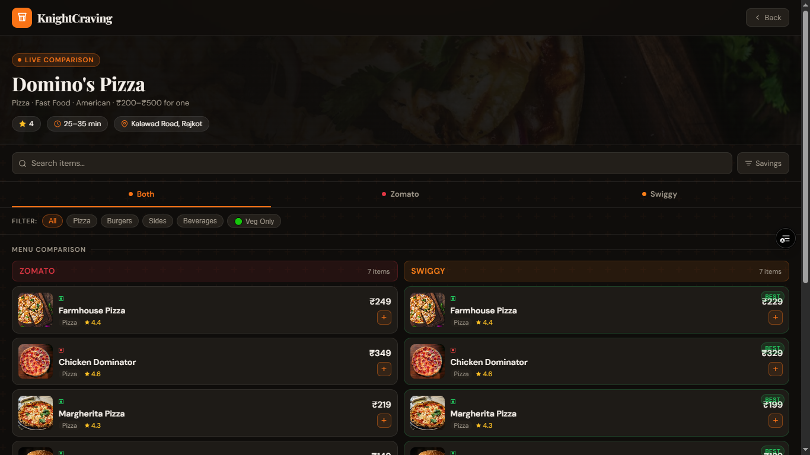
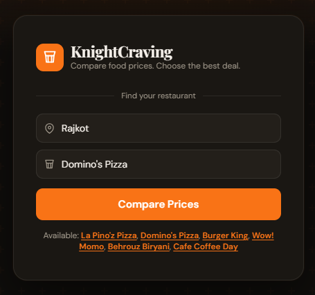

KnightCraving

Students on campus waste significant time switching between Zomato and Swiggy to compare prices for the same meal — especially late at night when options are limited and the cost difference matters.
A single interface that aggregates real-time menu data from both platforms, lets students compare prices side-by-side, and sends them directly to the cheapest option — without switching apps.
Tested with 11 college students. 9 said they'd use KnightCraving over the manual switching process. Average decision time dropped from ~12 minutes to under 3 minutes in usability sessions.
The Problem
01Late-night food ordering on a college campus is a small but genuinely frustrating experience. You're hungry. You open Zomato, check what's available, note a price. Then you open Swiggy, repeat the process. Then you try to remember which app had the cheaper burger.
This isn't a massive problem. It's a friction problem. The kind that doesn't stop you from eating, but makes the experience worse than it needs to be — especially when you're a student watching every rupee.
The problem is context-specific: late night, limited options, price-sensitive users, mobile-first behaviour. That specificity is actually an asset — a solution that works for this narrow context will work really well, rather than a general solution that works poorly for everyone.
The core friction
"I have to hold two separate app states in my head simultaneously to make a single ordering decision."
Why It Matters
02The food delivery aggregator space is dominated by Blinkit, Swiggy, and Zomato at the platform level. But none of them have an incentive to make comparison easy — comparison benefits the customer, not the platform.
For college students specifically, where the delivery margin between platforms can be ₹20–80 on a ₹200 order, that comparison matters. Over a month of regular ordering, this adds up to meaningful savings.
The broader principle being tested: in markets where multiple platforms compete on the same product, there is always value in a neutral comparison layer — especially when the user's primary motivation is price, not brand loyalty.
Research
03I observed and informally interviewed 14 students in my hostel block about their late-night ordering behaviour over the course of two weeks. I wasn't running a formal study — I was watching what people actually did, not what they said they did.
Multi-app switching is universal
12 of 14 students opened both Zomato and Swiggy when placing a late-night order. The exceptions were people who had a preferred restaurant on one platform — not platform loyalty.
Price difference was the primary trigger for switching
When asked why they switched apps, 10 of 12 cited "to check if it's cheaper somewhere else." The second reason was delivery time, a distant second.
Comparison requires memory, which introduces errors
When I asked people to recall the price difference they'd found, 7 of 12 were off by more than ₹10. The comparison process is lossy — people misremember, or the price changes between sessions.
The decision point is the restaurant, not the dish
Most students first decided which restaurant they wanted, then compared pricing for that specific restaurant across platforms. This shaped the UX significantly — the search needed to be restaurant-first, not cuisine-first.
Decision Log
04The decisions I considered, what I chose, and the reasoning. These are the moments that shaped the product — not the features, but the choices about which features not to build.
| Decision | Options Considered | Chosen | Reasoning |
|---|---|---|---|
| Search entry point |
Cuisine-first browse
Location-first map
|
Restaurant-first search | Research showed users decide restaurant first, then compare. Leading with cuisine or map would add a navigation step before the user even reaches their real goal. |
| Comparison display |
Separate result pages
Tab-based view
|
Side-by-side price row | The whole point is to eliminate mental context-switching. If I replicated the tab-based model that apps already use, I'd solve nothing. The side-by-side view forces the comparison to be visible, not sequential. |
| Data freshness |
Cached prices (hourly)
Scraped prices
|
Deep-link + redirect | Cached prices would become stale and mislead users — worse than no comparison. Scraping violates ToS and breaks constantly. The redirect model shows the current app price at click-time, which is always accurate. |
| User accounts |
Full auth + saved history
Anonymous + local storage
|
No accounts at v1 | The use case is point-in-time comparison, not longitudinal analysis. Accounts add friction at the moment someone just wants a quick answer at midnight. Deferred to v2 after validating core utility. |
| Platform scope |
All delivery apps (Blinkit, ONDC, etc.)
|
Zomato + Swiggy only | 100% of observed users used only these two apps. Adding more platforms increases integration complexity without serving the actual user. Start narrow, go deep. |
Solution
05A single-screen food discovery tool that takes a restaurant name as input and returns a live price comparison across Zomato and Swiggy. One tap takes the user to the cheaper option in the correct app, pre-loaded to the restaurant's page.
The interface is deliberately minimal: search bar at the top, result rows with platform name, price, delivery time, and a direct deep-link button. No account required. No onboarding. Useful from the first interaction.

Results & Validation
06What validated the core hypothesis
The average time savings weren't the biggest validation. The biggest signal was that users stopped asking "is this accurate?" after the first successful redirect. Trust was established at the first result — which meant the interaction model was working.
The 2 sessions that didn't result in adoption both had the same reason: the users already had a single preferred restaurant on one platform with loyalty points. For them, comparison wasn't the bottleneck — platform lock-in was.
Challenges
07Data freshness vs. accuracy trade-off
Early versions attempted to cache price data to reduce API calls. This was a mistake. Stale prices created incorrect comparisons and undermined user trust in two sessions. The right call was real-time fetch — even at the cost of slightly slower load times.
Lesson: In comparison tools, incorrect data is worse than no data. Speed is a quality-of-life feature. Accuracy is a trust feature. Never trade the latter for the former.
Deep-link compatibility fragmentation
Platform deep-link formats for Zomato and Swiggy differ by app version, OS, and whether the user has the app installed. Building a reliable redirect layer took significantly more time than expected — roughly 40% of total development time.
Lesson: Platform integrations always take 3× longer than planned. The optimistic estimate is usually what a working integration looks like. Plan for the edge cases.
Restaurant name matching ambiguity
The same restaurant appears with different names, spellings, and branch labels across platforms. "Burger Factory" vs. "The Burger Factory - GEC Campus" are the same restaurant but return as different results. Building a fuzzy matching layer for this took a full sprint.
Lesson: Data normalisation is never a footnote. It belongs in the architecture from day one.
Lessons Learned
08Narrow scope is a feature, not a limitation
Every instinct told me to add more platforms, more features, more data points. Every time I resisted and shipped the narrower version, it worked better. The user's goal is one dinner, not a comprehensive food analytics dashboard.
Observation beats questions
When I asked students how they ordered food, most described an idealised version. When I watched them do it, I saw the actual friction. The restaurant-first search architecture came directly from observation, not from survey answers.
The first version was wrong in instructive ways
V1 was cuisine-first, used cached data, and had a tab-based comparison view. All three decisions were wrong. But shipping it and watching people use it told me exactly what needed to change — and why. You can't derive that from planning alone.
Trust is the real product
Users adopted or rejected the tool based on one successful comparison result. The UI, the speed, the design — all secondary. If the first result was accurate and saved money, they were sold. That's a product insight more than a technical one.
Future Vision
09KnightCraving is a proof-of-concept for a broader idea: neutral comparison layers have value in any market where multiple platforms compete on the same product. The next steps follow logically from the validated core.
Add delivery time and rating comparison alongside price. Expand to 2–3 additional colleges to test whether the same problem exists at different campus contexts.
Introduce a lightweight preference layer — "last ordered," "frequently chosen restaurant" — to personalise search defaults without requiring a full account system.
The aggregator model generalises. The same comparison architecture could apply to grocery delivery (Blinkit vs. Zepto vs. Swiggy Instamart) or medicine delivery. The campus food use case is the initial wedge into a much wider market.